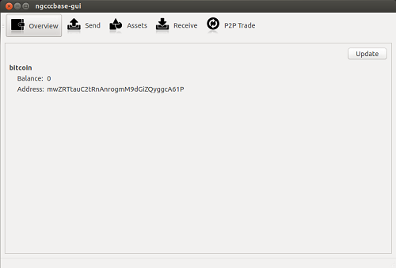
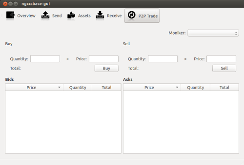

ChromaWallet functions just like a normal Bitcoin wallet, but additionally it allows one to work with assets which are represented with colored coins, particularly to:
issue securities/tokens of any kind: shares, bonds, tickets, private currencies, smart property, etc.
send and receive them
trade on the build-in decentralized exchange
Information about ownership of colored coins is recorded directly in the Bitcoin blockchain, which means it is unforgeable and doesn't rely on any third-party server to keep valid records of ownership.
Additionally, we plan to implement Bitcoin's advanced features, such as escrow, dispute mediation, trustless mixing and so on. Stay tuned!


Download ChromaWallet
Warning: This is an early beta release, use at your own risk.
You can find more information about colored coins protocol here. Note that the current version of ChromaWallet doesn't implement "White paper v2.0", as it is still under development. Instead it implements a model described in the theory of colored coins document.